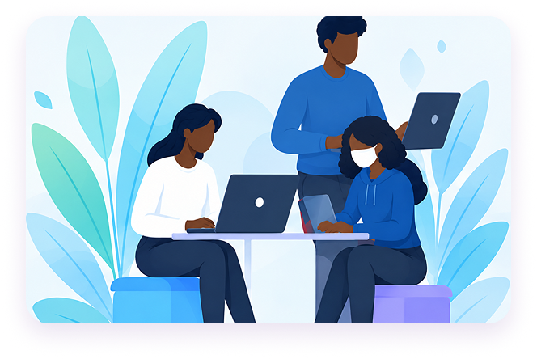

Conecta. Comunica. Colabora.
Aproxime as pessoas das suas tarefas.
O EloTask reúne comunicação, tarefas, projetos, reuniões, documentos e turnos num único ambiente digital, para que a sua equipa trabalhe organizada e sempre ligada.

Funcionalidades
Tudo o que a sua equipa precisa, num só lugar
Menos aplicações, menos informação dispersa e mais tempo para o que realmente importa.
-
Tarefas e projetos
Crie, atribua e acompanhe tarefas e projetos, com responsáveis e prazos sempre claros.
-
Mensagens e reuniões
Converse em equipa ou individualmente e organize reuniões sem sair da plataforma.
-
Calendário e documentos
Consulte prazos e eventos num só calendário e partilhe documentos com controlo de acesso.
-
Gestão de turnos
Registe disponibilidades, gere escalas e valide pedidos de troca com apoio de inteligência artificial.
Pensado para quem trabalha em equipa
- Estudantes e grupos académicos
- Equipas de desenvolvimento de software
- Pequenas e médias empresas
- Gestores e coordenadores de projetos
- Equipas remotas ou híbridas
- Associações e organizações
Junte-se ao EloTask
Pronto para ligar a sua equipa?
Crie a sua conta para começar ou entre se já faz parte de uma equipa no EloTask.
Já tem conta? Iniciar sessão